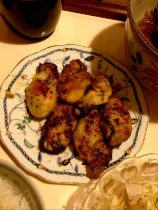
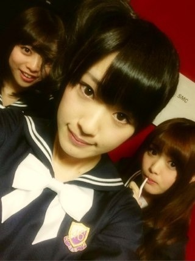
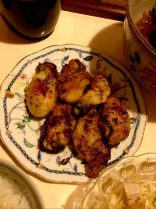
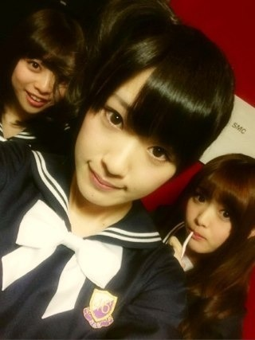

2013/0213Wed（´-`）.｡oO(かずみん×141
こんばんは！
いつも応援ありがとうございます(*^^*)
今日は完成したMVを
いくつか鑑賞しました！
自然な表情が新鮮です。
表題曲は珍しく高山のキリ顏が
見れるかも...笑
裏話等々、沢山あるので、
早く皆さんにお話したいです♪
曲もとっても素敵ですよ。
皆さんお楽しみに...♪
---------
明日はバレンタイン！
ということで、今からみんなに
作ります！目指せ50個！
ティラミスではないですよ(´･u･`)
カップケーキ♪♪
あ、乃木どこでティラミスって
言えてなかったな...(T_T)どんまい！
ちなみに本命チョコは19年間
作ったことも、もちろんあげたことも
ありません((((；ﾟДﾟ)))))))
さぁさあ、
疑うなら母に聞いてみな！
私の親友にも聞いてもいいよ(-_-)
誰かもらって下さい♪
あ、ちなみに日村さんのは
数えません...(._.)笑
また出来たら写真載せますね(o^^o)
--------
今日は母の家にいます。
チョコ(犬)がすごいです...
なんか...looooooong!!!
細長い！
そして母が牡蠣のバター醤油焼きを
作ってくれました。

ガジ美味しかった！！！
あぁ、お腹空いたなぁ...
それじゃ、今日はこの辺でっ♪
最後に。

newヘアでねねちゃんの
顔が隠れちゃった(T_T)
ごめんね(T_T)(T_T)
5thは基本このヘアでいきます！
MVは違うけど(>_<)
それでは！
おやすみなさい...☆
いつも応援ありがとうございます(*^^*)
今日は完成したMVを
いくつか鑑賞しました！
自然な表情が新鮮です。
表題曲は珍しく高山のキリ顏が
見れるかも...笑
裏話等々、沢山あるので、
早く皆さんにお話したいです♪
曲もとっても素敵ですよ。
皆さんお楽しみに...♪
---------
明日はバレンタイン！
ということで、今からみんなに
作ります！目指せ50個！
ティラミスではないですよ(´･u･`)
カップケーキ♪♪
あ、乃木どこでティラミスって
言えてなかったな...(T_T)どんまい！
ちなみに本命チョコは19年間
作ったことも、もちろんあげたことも
ありません((((；ﾟДﾟ)))))))
さぁさあ、
疑うなら母に聞いてみな！
私の親友にも聞いてもいいよ(-_-)
誰かもらって下さい♪
あ、ちなみに日村さんのは
数えません...(._.)笑
また出来たら写真載せますね(o^^o)
--------
今日は母の家にいます。
チョコ(犬)がすごいです...
なんか...looooooong!!!
細長い！
そして母が牡蠣のバター醤油焼きを
作ってくれました。

ガジ美味しかった！！！
あぁ、お腹空いたなぁ...
それじゃ、今日はこの辺でっ♪
最後に。

newヘアでねねちゃんの
顔が隠れちゃった(T_T)
ごめんね(T_T)(T_T)
5thは基本このヘアでいきます！
MVは違うけど(>_<)
それでは！
おやすみなさい...☆
2013/02/13 23:42
コメント(517)
かずみん
クッキー よかった
クッキー よかった
かずみーん！！
頑張ってください^o^
頑張ってください^o^
可愛いいですねー。
新曲たのしみだぞうおお(すまいる)
かずみんショートにしてよ！
ヤッシーです(^-^)v
チョコ下さい!!(笑)
牡蠣めっちゃ旨そう!!
へばっまずな(^-^)/~~
チョコ下さい!!(笑)
牡蠣めっちゃ旨そう!!
へばっまずな(^-^)/~~
ティラミスやた(笑)
かわいい(*^o^*)大好きだよ♪
かわいいっす！！
似合っていますっす
似合っていますっす
かずみん！！！
5th 楽しみにしてます！！！
ではテスト近いんで
5th 楽しみにしてます！！！
ではテスト近いんで
かずみんがチョコくれんの待ってるね(o^^o)笑
高山さんからチョコ僕も欲しいです(^o^)
MV楽しみ(≧▽≦)
かずみんの本命ほしいよ～(>_<)
新しい髪型可愛いヾ(≧∇≦)
かずみんの本命ほしいよ～(>_<)
新しい髪型可愛いヾ(≧∇≦)
チョコください！
え！
本命チョコあげたことないの？
じゃ俺が貰ったチョコは・・・
やっぱり俺のことは遊びだったのね・・・《ﾟДﾟ》
この話はフィクションです。
実在の人物、団体とは一切関係ありませんw
本命チョコあげたことないの？
じゃ俺が貰ったチョコは・・・
やっぱり俺のことは遊びだったのね・・・《ﾟДﾟ》
この話はフィクションです。
実在の人物、団体とは一切関係ありませんw
ティラミスめっちゃおいしそうだった 50個がんばって作ってね(笑)本命チョコほしい(笑)
50個がんばって作ってね(笑)本命チョコほしい(笑)
明日もお仕事がんばってね
明日もお仕事がんばってね
HK3発動？www
5thの活動楽しみにしてる！
まずは2/22のライブまで仕事とか諸々頑張る♪
新曲 楽しみだよ
制服姿 カワイイ
ＰＶ 早く見たい
牡蠣きょう食べたんだけど
牡蠣をみると かずみんを思い出す
制服姿 カワイイ
ＰＶ 早く見たい
牡蠣きょう食べたんだけど
牡蠣をみると かずみんを思い出す
。
。゜ ★ :-*♪:-*
。゜ ★ :-*♪:-*
¶n_n_￣|..∧_∧:-*♪:-*
.(￣￣￣|ロ|.(๑ت๑*):-*
.[[＝＝＝|_|=[U★U]
∠oooo=oo=oooo┘ ⊃⊃
〓〓乃〓〓木〓〓坂〓〓46〓〓
こんばんワシントン(๑ت๑)(笑)
花粉症が出てきて鼻風邪引いてしまいました(>_<)(笑)
花は、好きやけど花粉は嫌やぁ…(笑)
5thのタイトルみたよー★(๑ت๑)
君の名は希望 ってめっちゃ良いタイトルやね(≧∀≦):-*さすが秋元先生って感じだよねー★(๑ت๑)
新衣装の感想は、、アルプスにいる少女みたいでめっちゃ乃木坂らしいです★
良い曲期待してます(≧∀≦):-*
カップリングも今回も神曲期待っ★早く、聴きたいなぁ～(T_T)
今週の乃木どこめっちゃ楽しみだな～★
牡蠣めっちゃ美味しそうやなぁ～★(≧∀≦)
うらやましい！(笑)
髪型似合っとるよぉー★
明日も頑張ろ～♪
１日マイペース♪
１日楽しく過ごせますように…★
こうたん★(๑ت๑)
相変わらずチョコかわいくねえええ(笑)
作る方のチョコは頑張ってくださいね♪
作る方のチョコは頑張ってくださいね♪
かずみんっ♪本命ﾁｮｺちょーだい(｡･ω･｡)
乃木どこ?のかずみんが作ったティラミス美味しそうだった(^○^)
食べてみたい!
カップケーキ俺がもらう(笑)
新制服とnewヘアーめっちゃ似合ってる!
なんかめっちゃ新鮮だね
食べてみたい!
カップケーキ俺がもらう(笑)
新制服とnewヘアーめっちゃ似合ってる!
なんかめっちゃ新鮮だね
ティラミスって、家で作れるものだと知らなかったというか、手作りした人、はじめて見た！！！
お菓子作りも得意とは知らなかったです
また乃木どこで、ガジお菓子作り企画、やってもらいたいです！
お菓子作りも得意とは知らなかったです
また乃木どこで、ガジお菓子作り企画、やってもらいたいです！
かずみんこんばんは(^-^*)/
髪型いいね(^O^)
チョコくれぃ！笑
新曲楽しみだよ！(^-^)/
ティラミスが良い！(笑)
マジで!?
牡蠣美味そう！(^-^)/
犬、可愛いd(^-^)
その髪型可愛いね！！
ティラミスが良い！(笑)
マジで!?
牡蠣美味そう！(^-^)/
犬、可愛いd(^-^)
その髪型可愛いね！！
ティラミス言えてないの面白かったよー
5thが楽しみだー！
5thが楽しみだー！
かずみんこんばんは★
牡蠣のバター醤油焼き美味しそうです(^^ゞ僕も牡蠣は大好きなんですよね(^o^)
かずみんの手作りチョコ欲しいです(^-^)
新制服可愛らしくて素敵ですねヽ(^^)
早く新曲も聴きたいしいろんな裏話も聞きたいです♪
いつも応援しているので頑張ってくださいね☆
牡蠣のバター醤油焼き美味しそうです(^^ゞ僕も牡蠣は大好きなんですよね(^o^)
かずみんの手作りチョコ欲しいです(^-^)
新制服可愛らしくて素敵ですねヽ(^^)
早く新曲も聴きたいしいろんな裏話も聞きたいです♪
いつも応援しているので頑張ってくださいね☆
私も本命あげたこと
ないなー(笑)
ないなー(笑)
久しぶりのコメ!!(笑)
一実さんのキメ顔見たいね～ヘ(≧▽≦ヘ)♪
１６日の握手会行くよ!!
楽しみ！！！！
待っててね、一実さん(｀ー´ゞ-☆
一実さんのキメ顔見たいね～ヘ(≧▽≦ヘ)♪
１６日の握手会行くよ!!
楽しみ！！！！
待っててね、一実さん(｀ー´ゞ-☆
こんばんわに(^ー゜)ノ
バレンタインが始まる～
チョコが欲しいよー(>_<)
まぁそれは置いといて
5thシングル楽しみやわ♪
かずみんの活躍を期待してるぜ！
結構写メのかずみんの髪型好きやわ。
質問です!!
●かずみんはチョコはなに味が好きですか？
例えば私はブラック派です！
では
ばいばいきーん( ´∀`)/~~
バレンタインが始まる～
チョコが欲しいよー(>_<)
まぁそれは置いといて
5thシングル楽しみやわ♪
かずみんの活躍を期待してるぜ！
結構写メのかずみんの髪型好きやわ。
質問です!!
●かずみんはチョコはなに味が好きですか？
例えば私はブラック派です！
では
ばいばいきーん( ´∀`)/~~
かずみんヤッホー(o・・o)/
キリ顔気になる(笑)
バレンタイン何かちょーだい←
かずみんのが欲しい
まっちゅんの正直食べたくない(笑)
怒られる((((；゜Д゜)))
まりっか♪
牡蠣すきやなあ(笑)
俺食べれんからなんとも、、、
写メいいよ
その髪型好きかもww
まっちゅんは髪おろした方が可愛いけどな(笑)
またかずみんから頼んでや
横浜行かへんから京都でお願いしますm(_ _)m
京都やまちゃんおらんから一人やww
今回多いからいっぱい話せる(笑)
楽しみやー
ほなねﾉｼ
キリ顔気になる(笑)
バレンタイン何かちょーだい←
かずみんのが欲しい
まっちゅんの正直食べたくない(笑)
怒られる((((；゜Д゜)))
まりっか♪
牡蠣すきやなあ(笑)
俺食べれんからなんとも、、、
写メいいよ
その髪型好きかもww
まっちゅんは髪おろした方が可愛いけどな(笑)
またかずみんから頼んでや
横浜行かへんから京都でお願いしますm(_ _)m
京都やまちゃんおらんから一人やww
今回多いからいっぱい話せる(笑)
楽しみやー
ほなねﾉｼ
久しぶりのコメ!!(笑)
一実さんのキメ顔見たいね～ヘ(≧▽≦ヘ)♪
１６日の握手会行くよ!!
楽しみ！！！！
待っててね、一実さん(｀ー´ゞ-☆
一実さんのキメ顔見たいね～ヘ(≧▽≦ヘ)♪
１６日の握手会行くよ!!
楽しみ！！！！
待っててね、一実さん(｀ー´ゞ-☆
初コメです(^_^)v
新しい制服も似合ってるねー(=ﾟωﾟ)ﾉ
新曲、来週の乃木どこが楽しみです(´･Д･)」
新しい制服も似合ってるねー(=ﾟωﾟ)ﾉ
新曲、来週の乃木どこが楽しみです(´･Д･)」
本命チョコは作ったことはないけど
本命ティラミスは作ったことあるわよ♥
ってオチは無しでねw
本命ティラミスは作ったことあるわよ♥
ってオチは無しでねw
あかりだよ(*^^*)
いやぁ…今年も本命はないんだけどさ(笑)
友チョコ…うちもカップケーキとショートケーキにしたのよ！
いやぁ…もうブログ見た瞬間…
よっしゃぁぁぁぁ！だから(笑)
newヘアー可愛い(*^^*)
真似しよう←お前がやってもかずみんみたいに可愛くないしー
(照)
かずみんはリボンなのね…いやぁ…願ってたの…
かずみんがリボンなら…って…
スゴくない？スゴくない？
というハイテンションでコメしました(≧∇≦)
んじゃバイチャ(^w^)
かずみん好きだよー
いやぁ…今年も本命はないんだけどさ(笑)
友チョコ…うちもカップケーキとショートケーキにしたのよ！
いやぁ…もうブログ見た瞬間…
よっしゃぁぁぁぁ！だから(笑)
newヘアー可愛い(*^^*)
真似しよう←お前がやってもかずみんみたいに可愛くないしー
(照)
かずみんはリボンなのね…いやぁ…願ってたの…
かずみんがリボンなら…って…
スゴくない？スゴくない？
というハイテンションでコメしました(≧∇≦)
んじゃバイチャ(^w^)
かずみん好きだよー
かずみさん、お疲れ様。
新曲楽しみにしてる。
バラードぽいよね。
髪型可愛いやん。
チョコかずみさんからもらえるのはうらやましい。
俺は、掃除のおばさんとかにもらえるチョコだけだな。
50歳以上のおばさまには、人気あるんだわ笑
かずみさんからもらえたら死ぬわ笑
日曜日楽しみだ
新曲楽しみにしてる。
バラードぽいよね。
髪型可愛いやん。
チョコかずみさんからもらえるのはうらやましい。
俺は、掃除のおばさんとかにもらえるチョコだけだな。
50歳以上のおばさまには、人気あるんだわ笑
かずみさんからもらえたら死ぬわ笑
日曜日楽しみだ
こんばわっ！
お仕事お疲れさまです！
乃木どこ？みたよ！！
言えてなかったとこ、爆笑しやした！(^｡^)
演技の方も見たかったなー(´Д` )
でもかずみんが日村君に取られる感じがするからまぁいっか(^｡^)
チョコ51個目下さいねd(￣ ￣)笑
なので一個多めに作るんですよ？？
いいですね？？？
かずみんがいつ本命あげるんだろぅね⁈
なんか楽しみですねぇ(￣▽￣)
NEWヘアーアリですよ！！
あんま暗くてわかんないけど、
5thで楽しみにしますね！
では、あしたもガジ頑張って下さいね！！
あー今からチョコ作るのかな？
遅くまで起きてちゃダメですよ！？
おやすみなさい(^-^)
お疲れ様です。
5シングルの曲、楽しみにしてます。
5シングルの曲、楽しみにしてます。
こんばんは☆
チョコ本命居なかったてのはなんか意外です(・ω・)
料理上手はお母さんの影響ぽいですねー☆
かずみさんとのゴハン作りはたのしそうです(*´｀)
5th情報色々出てきて面白くなってきましたね♪
楽しみです☆
チョコ本命居なかったてのはなんか意外です(・ω・)
料理上手はお母さんの影響ぽいですねー☆
かずみさんとのゴハン作りはたのしそうです(*´｀)
5th情報色々出てきて面白くなってきましたね♪
楽しみです☆
かずみんこんばんわ！ごっす楽しみ！チョコちゃんもう何か、やけくそやね！足やけどした～。
こんばんわ
新曲のタイトルが発表されたから
早く聞きたい！
MVも見てみたいな(^_^)
かずみんからバレンタインに
チョコとかもらいたい(笑)
新しい髪型もいいね(^^)/
今度の握手会もこの髪型なのかな？
ポジティブ！
新曲のタイトルが発表されたから
早く聞きたい！
MVも見てみたいな(^_^)
かずみんからバレンタインに
チョコとかもらいたい(笑)
新しい髪型もいいね(^^)/
今度の握手会もこの髪型なのかな？
ポジティブ！
作ります！目指せ５０個！
が、カップケーキでヨカッタ。
カキフライで無くてヨカッタ。
ホントにホントウにヨカッタ。
安心して、眠れそうです （笑）
が、カップケーキでヨカッタ。
カキフライで無くてヨカッタ。
ホントにホントウにヨカッタ。
安心して、眠れそうです （笑）
かずみん、かわいい！！
「ガジおいしかった」こんな使い方もＯＫなんですね？
僕も使っていいですか？？
「ガジおいしかった」こんな使い方もＯＫなんですね？
僕も使っていいですか？？
もらいたいです（笑）
現実不可能だけどね
現実不可能だけどね
かずみんこんばんは！
料理上手なかずみんが作るお菓子もおいしいだろうなぁ・・・
かずみんからお菓子もらえたら最高に幸せ＼(^o^)／
新曲の情報も解禁になったし、どんな曲かすごく楽しみだよ！
料理上手なかずみんが作るお菓子もおいしいだろうなぁ・・・
かずみんからお菓子もらえたら最高に幸せ＼(^o^)／
新曲の情報も解禁になったし、どんな曲かすごく楽しみだよ！
お疲れ！
MVと次の乃木どこ楽しみ！！！
是非俺もバレンタインを！
願わくば本命をください！！！（笑）
その髪型もイイ！！！＼(^o^)／アメイジング
MVと次の乃木どこ楽しみ！！！
是非俺もバレンタインを！
願わくば本命をください！！！（笑）
その髪型もイイ！！！＼(^o^)／アメイジング
かっこいいキリ顔、楽しみにしております。
こんばんは～(*´▽｀*)
お疲れさまです
高山さんのチョコもほしいな～
やばい まいんにしかられてします
まいんにしかられてします
カキおいしそうだな～夜なのにお腹すいてきました(@_@)
最近よく食べるもので
けど太ってないですよ！
部活もやって筋トレもやっています
来週の乃木どこ楽しみです(*´▽｀*)
生誕祭に5thオンタイムで見ますよ
(いつもオンタイムで見てます )
)
応援しています
おやすみなさい(*´▽｀*)
お疲れさまです
高山さんのチョコもほしいな～
やばい
カキおいしそうだな～夜なのにお腹すいてきました(@_@)
最近よく食べるもので
けど太ってないですよ！
部活もやって筋トレもやっています
来週の乃木どこ楽しみです(*´▽｀*)
生誕祭に5thオンタイムで見ますよ
(いつもオンタイムで見てます
応援しています
おやすみなさい(*´▽｀*)
かずみんチョコくれええええ
てか付き合って(`･v･´)ゞ笑
かずみんまた愛犬料理したのか？Σヾ(;`･Д･)ﾉ
醤油もかけられてかわいそう(>_<)
あれ、名前奴なんだっけ？
かき？ちょこ？忘れたぁぁぁΣヾ(;`･Д･)ﾉ
5thたのしみ(｀_´)ゞ
てか付き合って(`･v･´)ゞ笑
かずみんまた愛犬料理したのか？Σヾ(;`･Д･)ﾉ
醤油もかけられてかわいそう(>_<)
あれ、名前奴なんだっけ？
かき？ちょこ？忘れたぁぁぁΣヾ(;`･Д･)ﾉ
5thたのしみ(｀_´)ゞ


大学のテスト勉強頑張るでござるううぅぅぅ！